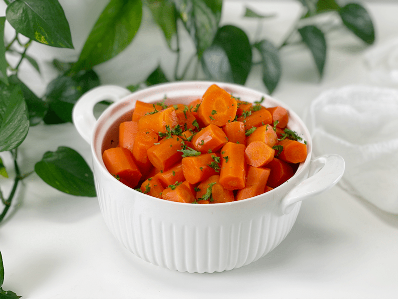
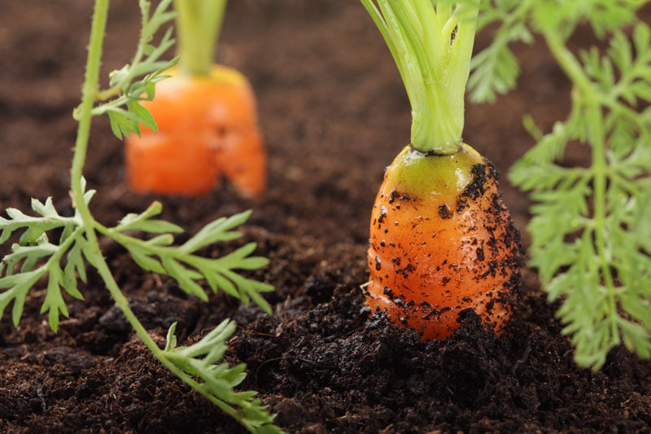
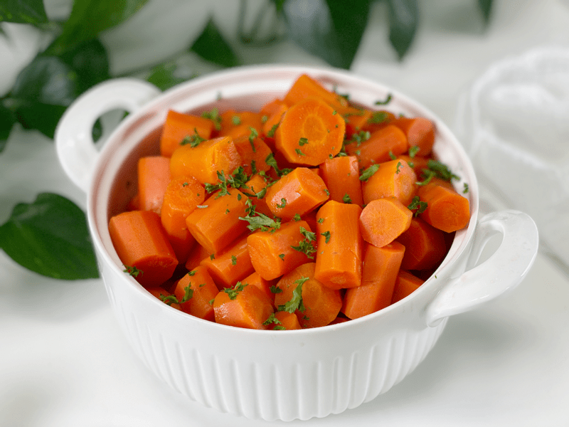
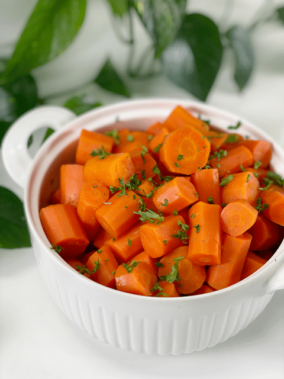
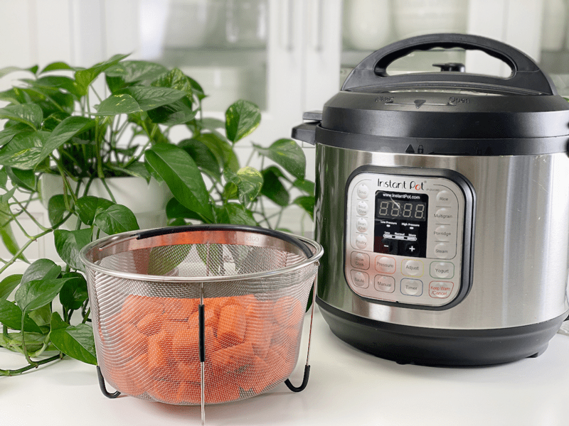

Carrots | Steamed | Instant Pot | Stove Top
When you think of carrots, what is the first thing that comes to your mind? Bugs Bunny? Dieting? Boring? Tasteless? Hand me a Twinkie instead? I don’t blame you–carrots aren’t really pegged as comfort food, but I have come to learn that carrots can be AMAZING based on how they are cooked. Raw carrots are delicious too, but one can eat only so many. When they are cooked, I find that people can eat more.

Now, I know what you’re thinking… “Geez Amie Sue, steamed carrots? Can it get any more boring?” Well, yeah, it can, but I am here to tell you that great enjoyment can come from simple foods…when prepared correctly. We are so used to drowning our veggies in sauces, butter, and spices that we lose the beauty of their true nature.
Are Cooked Carrots Healthier Than Raw Carrots?
The antioxidant value of carrots increases by about 34% when cooked. Why? Because raw carrots have tough cellular walls. Cooking partially dissolves the cellulose-thickened cell walls, freeing up nutrients. (1) Also, the carotenoids, such as the beta carotene in carrots, are more readily available when carrots are cooked. When the cooked carrots are served as part of a meal that provides some fat, the body can absorb more than half of the carotene.

Cooking Times and Carrot Sizes
Instant Pot Method
- The cooking time is somewhat tricky, but nothing to get stressed over. It can vary based on the size of your carrots. The larger the carrot diameter is, the longer it will take to cook. I prefer to steam the carrots for 4 minutes at high pressure, followed by a quick release. This timing gives fork-tender carrots. If you like softer carrots, increase cooking time by a minute. On the other hand, if the carrots are too thin, they may fall apart, so cook for only 1 minute with quick release.
- In the ingredient list, I indicated that I cooked 2.7 pounds of carrots. You don’t have to use that amount–I’m just showing you what I did. If you have more or less, you don’t have to adjust the cooking times… again, timing is only affected only by the carrot size.
Stove Top Method
- The benefit of steaming on the stove top is that you can check the doneness by quickly lifting the lid and poking them. But I must add that it’s not a good habit to get into because each time you raise the lid, the steam escapes and has to rebuild when you return the lid.
- Make sure to use a trivet or steaming basket rather than letting the carrots sit in water, which decreases nutrients.

Troubleshooting Your Steamed Carrots
“My carrots taste bland.”
- Overcooking can create mushy, tasteless carrots. Reduce the cooking time.
- Always taste the carrots before you start cooking with them. The flavor of carrots depends on how they’re grown, harvest conditions, and storage. Carrots should be left in the ground to reach maturity before harvesting, but they become bitter and woody if left in the ground too long.
“My carrots taste bitter.”
- If your carrots have any green coloring on them, it will cause a bitter taste in the carrot. Possibly the crown had been exposed to the sun while growing. The exposed part receives sunlight and develops chlorophyll, causing the top of the carrot and core to turn green. The green parts have a bitter taste, but they aren’t poisonous (in case that was your next question).
- Once cooked, try sprinkling sea salt on top to reduce bitterness.
- Peel the carrots before cooking, as a carrot’s bitterness is primarily concentrated in its peel. Taste them before cooking to determine if you need to peel.

Ingredients
Yields 6 cups
Preparation
Instant Pot Steaming Method
- Before we get started, scrub the carrots with a produce brush. Now, take a bite and see if you detect any bitterness. If you do, peel them.
- Cut off the ends, then in medium-large chunks or 2″ sticks. The goal is to achieve relatively equal-sized pieces.
- Place the carrots in the steamer basket that fits inside the Instant Pot liner.
- You can cook more or less than I did, with no need to adjust cooking times.
- Add 2 cups of water for the 8-quart machine (which I use) or 1 cup of water for the 6-quart unit.
- Secure the lid; make sure the pressure valve is set to “Sealing.”
- Press “Manual,” adjust the cooking time to 4 minutes on high pressure.
- If you are using prepackaged baby carrots, cook for 2 minutes.
- Once the machine beeps and the LCD screen reads LO: OO, flip the pressure valve to “Venting” to allow all the pressure to escape. Once the pin drops on the lid, carefully remove the lid.
- Test for doneness, pour into a bowl, spritz with vegetable broth, and season. Enjoy!
Stove Top Steaming Method
- Before we get started, scrub the carrots with a produce brush. Now, take a bite and see if you detect any bitterness. If you do, peel them.
-
Fill the cooking pot with 2 inches of water, bringing it to a boil over high heat. When you hear the water bubbling and see steam starting to emerge from the pot, it’s ready.
-
Place the peeled, trimmed, and chopped carrots in the steamer basket, lower into the pot, and reduce to a simmer over medium-high heat. Cover and cook for about 5-8 minutes for crisp-tender carrots.
- The vegetables are done when you can easily pierce the thickest part of the vegetable with a paring knife.
- Most vegetables are also bright and vibrant in color when ready.
- Stop steaming when the vegetables still have a bit of crunch to them — they will finish cooking in the residual heat.

© AmieSue.com